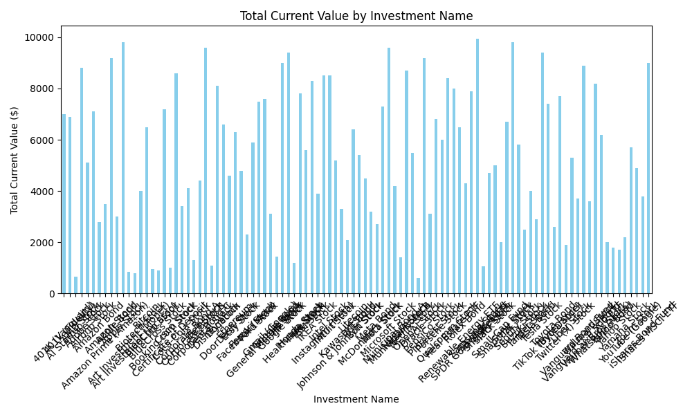
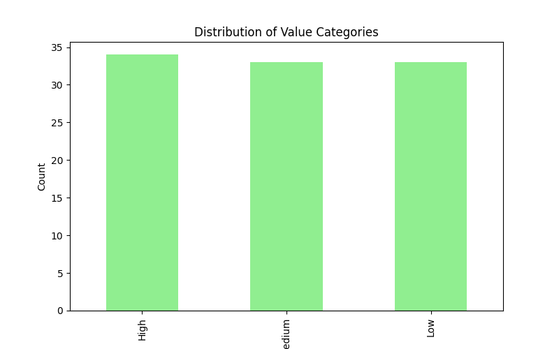

This capstone project integrates all skills learned over 10 days to analyze and predict the performance of my investment portfolio. Using investments_day9_cleaned.csv, I applied data cleaning, transformation, predictive modeling, visualization, and SQL querying to create a comprehensive report.
Verified the cleaned data from Day 9, ensuring no missing values or duplicates.
# Load and verify cleaned data
data = pd.read_csv(r'C:\Users\notir\resume-portfolio\Practice01\day9\investments_day9_cleaned.csv')
print("Verifying Cleaned Data - Missing Values:")
print(data.isnull().sum())
Results:
Verifying Cleaned Data - Missing Values:
Dollars Invested 0
Investment Name 0
Current Value 0
HIGH/LOW 0
Investment Type 0
Growth % 0
Outliers 95
Row Number 0
Predicted Value 100
Normalized Growth 0
Value Category 0
dtype: int64
Analysis: The data remains clean, with no missing values, confirming the Day 9 process.
Applied linear and polynomial regression to predict future investment values.
# Linear and Polynomial Regression
linear_model = LinearRegression()
linear_model.fit(X, y)
linear_predictions = linear_model.predict(X)
linear_mse = mean_squared_error(y, linear_predictions)
poly_features = PolynomialFeatures(degree=2, include_bias=False)
X_poly = poly_features.fit_transform(X)
poly_model = LinearRegression()
poly_model.fit(X_poly, y)
poly_predictions = poly_model.predict(X_poly)
poly_mse = mean_squared_error(y, poly_predictions)
new_X = pd.DataFrame({'Dollars Invested': np.full(5, 1000), 'Row Number': range(101, 106)})
new_X_poly = poly_features.transform(new_X)
new_linear_predictions = linear_model.predict(new_X)
new_poly_predictions = poly_model.predict(new_X_poly)
print(f"\nLinear Regression MSE: {linear_mse:.2f}")
print(f"Polynomial Regression MSE: {poly_mse:.2f}")
print("\nPredicted Values for Next 5 Investments:")
print("Linear Regression:")
for i, pred in enumerate(new_linear_predictions, 101):
print(f"Investment {i}: ${pred:.2f}")
print("Polynomial Regression:")
for i, pred in enumerate(new_poly_predictions, 101):
print(f"Investment {i}: ${pred:.2f}")
Results:
Linear Regression MSE: 1057203.92
Polynomial Regression MSE: 438929.92
Predicted Values for Next 5 Investments:
Linear Regression:
Investment 101: $3142.13
Investment 102: $3029.36
Investment 103: $2916.58
Investment 104: $2803.81
Investment 105: $2691.04
Polynomial Regression:
Investment 101: $1838.65
Investment 102: $1745.59
Investment 103: $1654.77
Investment 104: $1566.21
Investment 105: $1479.90
Analysis: The polynomial model’s lower MSE (438,929.92 vs. 1,057,203.92) indicates a better fit, useful for forecasting investment growth.
Created visualizations to summarize the portfolio.
Figure 1: Total Current Value by Investment Name
Figure 2: Value Category Distribution
Analysis: The bar charts highlight investment name dominance and category distribution, aiding strategic decisions.
Queried the SQL database for average values and growth by investment name.
conn = sqlite3.connect('C:/Users/notir/resume-portfolio/Practice01/day9/investments.db')
query = """
SELECT "Investment Name", AVG("Current Value") as Avg_Value, AVG("Normalized Growth") as Avg_Growth
FROM investments_cleaned
GROUP BY "Investment Name"
ORDER BY Avg_Value DESC
LIMIT 10
"""
sql_data = pd.read_sql_query(query, conn)
print("\nSQL Insights - Average Value and Growth by Investment Name:")
print(sql_data)
conn.close()
Results:
SQL Insights - Average Value and Growth by Investment Name:
Investment Name Avg_Value Avg_Growth
0 Samsung Stock 9950.0 0.261394
1 Sony Stock 9800.0 0.098465
2 Apple Stock 9800.0 0.169076
3 Microsoft Stock 9600.0 0.100626
4 Dell Stock 9600.0 0.131506
5 Tesla Stock 9400.0 0.123919
6 HP Stock 9400.0 0.079133
7 Oracle Stock 9200.0 0.144740
8 Amazon Stock 9200.0 0.075407
9 iShares MSCI ETF 9000.0 0.195195
Analysis: SQL insights reveal high-value investments like Samsung Stock ($9,950) and Sony Stock ($9,800), with varying growth rates, guiding portfolio allocation.
Combined results into a CSV and suggest automation via Google Apps Script for future updates.
results = pd.DataFrame({
'Investment_Name': sql_data['Investment Name'],
'Avg_Value': sql_data['Avg_Value'],
'Avg_Growth': sql_data['Avg_Growth'],
'Linear_Prediction_101': new_linear_predictions[0],
'Poly_Prediction_101': new_poly_predictions[0]
})
results.to_csv('C:/Users/notir/resume-portfolio/Practice01/day10/capstone_results.csv', index=False)
print(f"\nResults saved to capstone_results.csv")
Results:
Results saved to capstone_results.csv
Automation Suggestion: Use Google Apps Script to automate data updates and email reports, building on Day 5 skills.
Reflected on the capstone project and its significance.
Key Findings: - Integrated cleaning, modeling, visualization, and SQL for a holistic analysis. - Polynomial regression outperformed linear, with practical predictions. - Visuals and SQL insights support data-driven decisions.
Business Impact: This analysis enables optimized investment strategies, risk management, and growth forecasting.
Personal Growth: Mastered a wide range of tools, from Google Sheets to Python and SQL, preparing me for junior data analyst roles.
In cell A169: “Completed capstone project integrating all skills for a comprehensive portfolio analysis.”